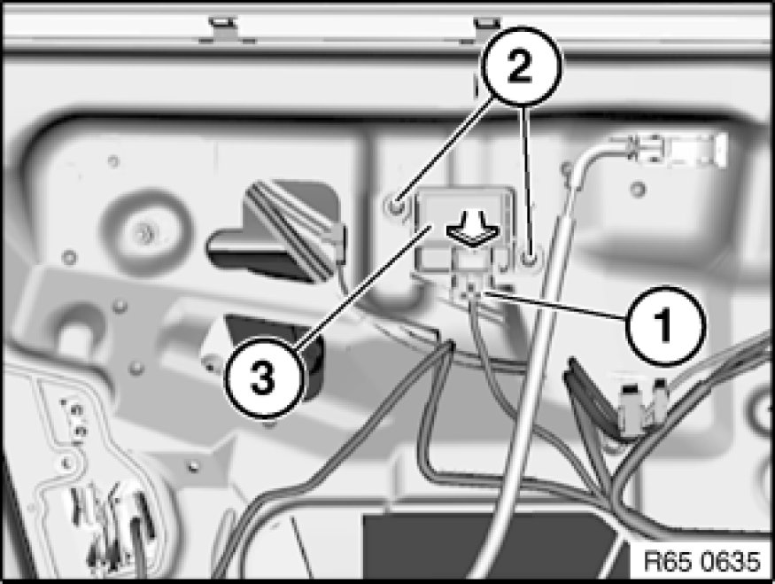

Removing and Installing/Replacing Left Front Door Sensor
65 77 740 - Removing and installing (replacing) left front door sensor

Important!
Read and comply with notes on protection against electrostatic damage (ESD protection) 61 35 ... Notes on ESD Protection (Electro Static Discharge).

Warning!
Note airbag safety instructions [1][2]Safety Regulations for Handling Components with Gas Generators!
Incorrect handling can activate airbag and cause injury.

Necessary preliminary tasks:
- Disconnect battery negative lead Instructions for Disconnecting and Connecting Battery and cover
- Detach sound insulation Removing and Installing/Replacing Sound Insulation in Left or Right Front Door in work area

Unfasten plug connection (1) and disconnect.
Release screws (2), tightening torque 65 77 7AZ Airbag Triggering Control.
Remove front door sensor (3) in direction of arrow.